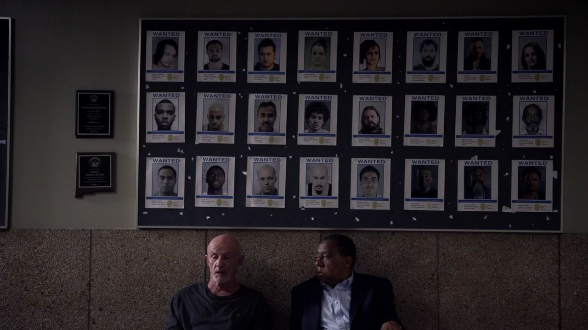
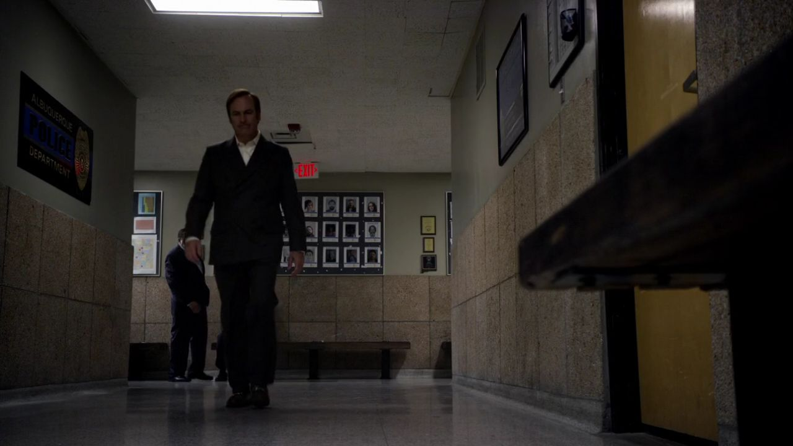
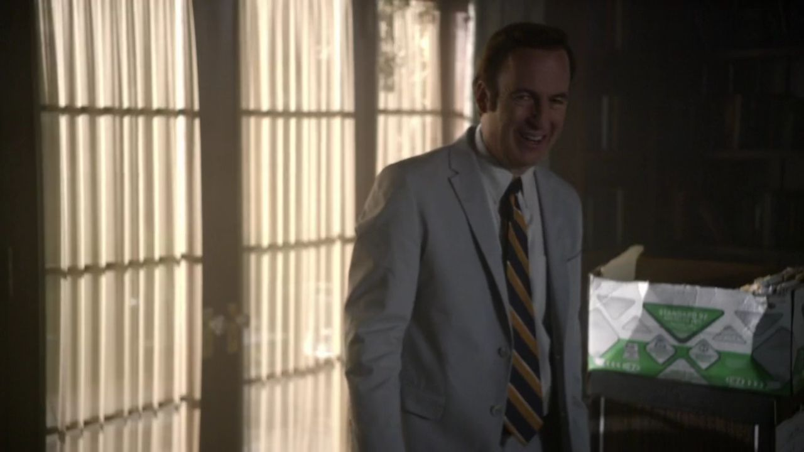
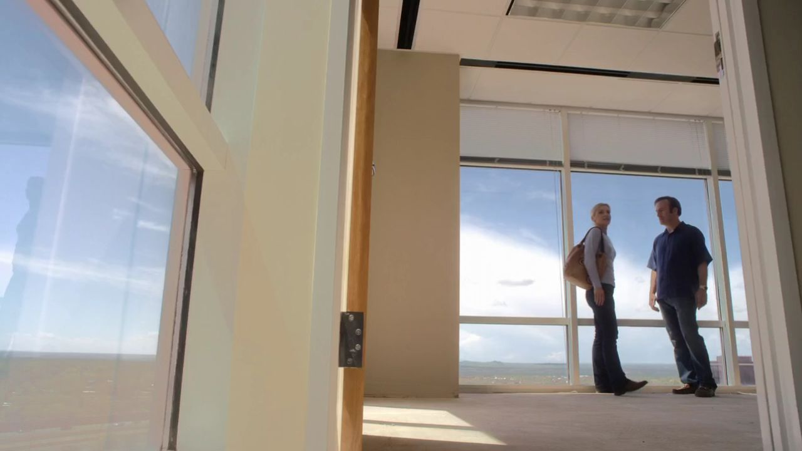
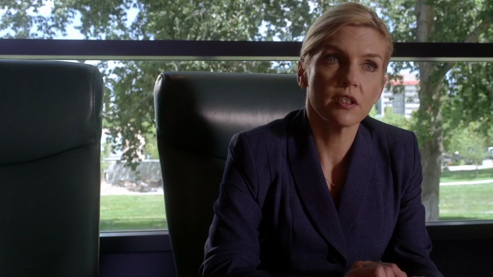
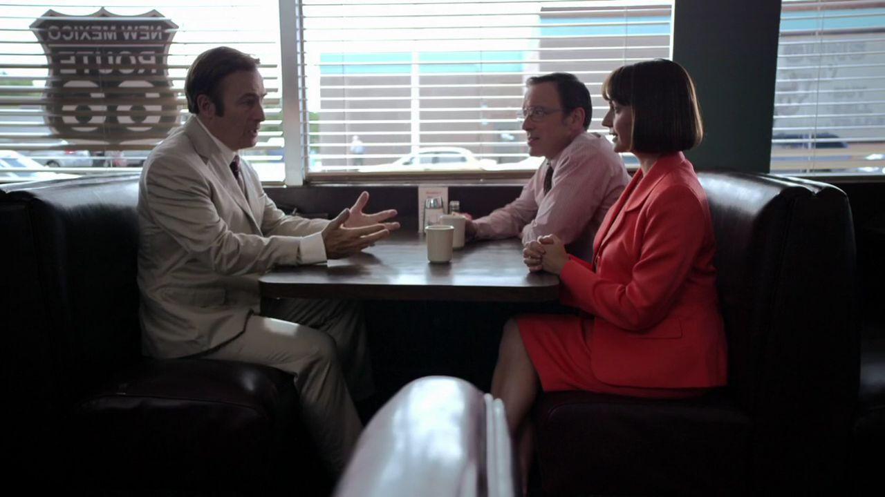
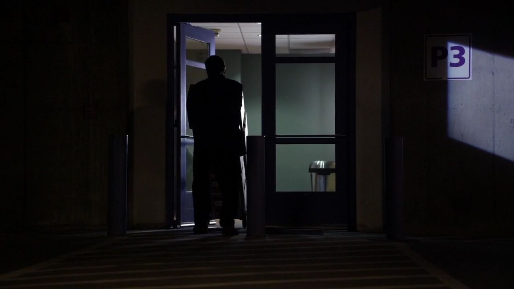
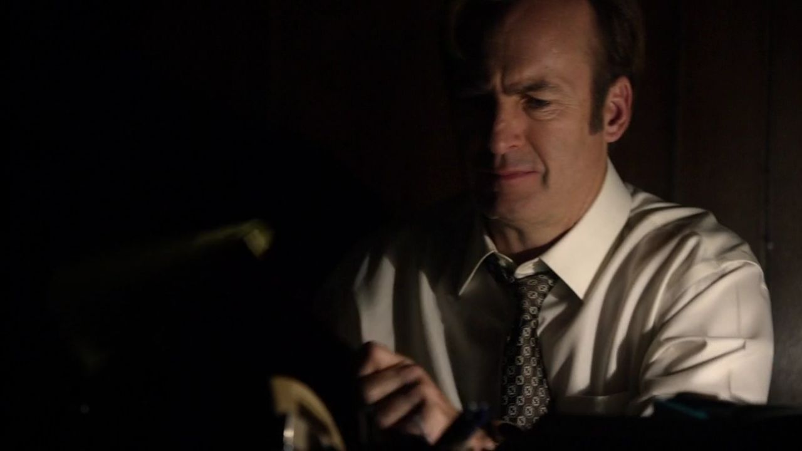
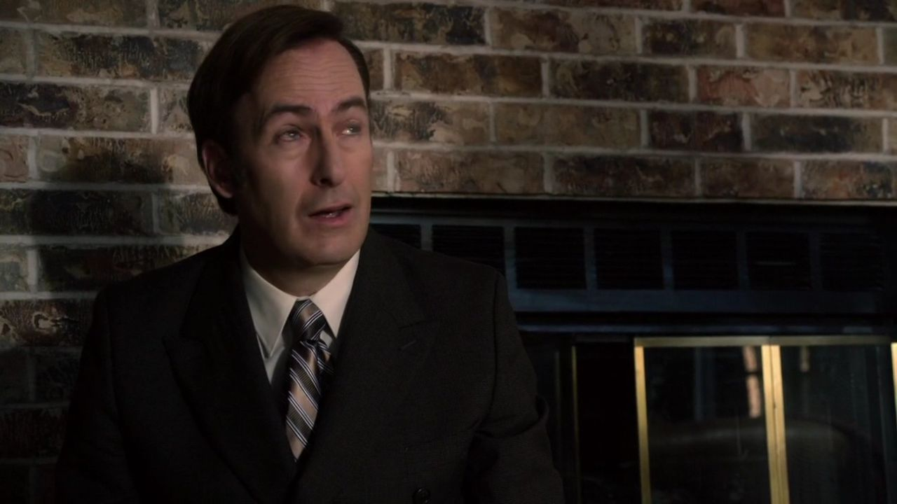
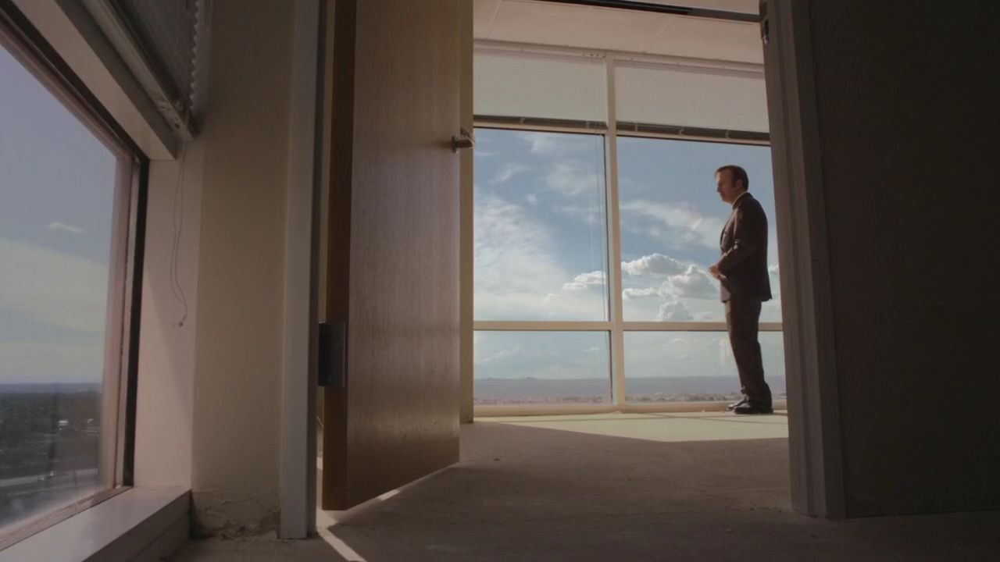

01
警局 / 归还笔记本之后
有人仍怀疑，有人选择不再继续追问。

剧情事实阿巴西质疑笔记本的来历，桑德斯与迈克的私下谈话则缓和了眼前压力。笔记被归还，不等于此前的动作从未发生。 [1][2]
这一场为什么重要 · 个人解读
正式物品回到原位，知识已经被别人看过。吉米与迈克的合作因此有了明确后果：不是一次只存在于笑话里的咖啡意外，而是让信息沿程序外的路走了一圈。
因此 →旧事暂时收尾，吉米想把精力放回事业。

风骚律师 · 第一季第 07 集
一笔不愿承认存在的钱，一间还没租下的房。
他想替金解围，也得交还自己的那一份。
剧透边界 截至 S01E07，含本集结尾
10 个剧情节点 · 7 位人物 · 04 组冲突吉米开始想象稳定事业的样子：宽敞的办公室，窗边的位置，身边可以合作的人。凯特曼夫妇却带着旧钱回来，要求他解决不能被解决的清白幻想。金因失去客户受到牵连，吉米便需要决定，要保住那笔能让自己往前走的钱，还是让整件事真正回到可以处理的轨道。
读这一集，跟住三件事认罪协议与自我叙述 / 金的工作位置 / 归还钱的代价

三幕梳理本集。每一场都区分剧情事实与个人解读，把行动、动机和后果连起来。
他开始想象一间可以共同工作的办公室。

剧情事实阿巴西质疑笔记本的来历，桑德斯与迈克的私下谈话则缓和了眼前压力。笔记被归还，不等于此前的动作从未发生。 [1][2]
正式物品回到原位，知识已经被别人看过。吉米与迈克的合作因此有了明确后果：不是一次只存在于笑话里的咖啡意外，而是让信息沿程序外的路走了一圈。
因此 →旧事暂时收尾，吉米想把精力放回事业。

剧情事实吉米把案件文件放到查克家，希望让哥哥重新接触法律工作。查克开始尝试短暂走到屋外，认为可以逐步增强耐受。 [1][2]
文件既是占地方的物件，也是一份邀请：你仍然可以在工作里有位置。吉米提供帮助时，也可能期待这段共同语言让兄弟更接近。两人的改善来自日常小动作，本集并没有宣布病情已被完全治好。
因此 →哥哥家里的空间被工作填起，外面的新办公室也开始进入想象。

剧情事实吉米带金看一处准备租用的办公室，邀请她与自己合伙。金欣赏空间，却因自己的职业考虑拒绝离开 HHM。 [1][2]
房间不是单纯的成功符号，它装着吉米希望共享的生活方式。他说留给合伙人的角落，其实在等一个具体的人。金的拒绝因此会痛，却不能被写成不在乎他：她同样有权判断自己需要怎样的工作。
因此 →两个人想象的未来，没有在这次参观中合到一起。
邀请真实，金也保留自己的去留。
一笔旧钱，让委托和情感都受到牵连。

剧情事实金提出归还公款并让克雷格服刑十六个月的协议，说明继续抗辩可能面临更重结果。贝茜坚持没有钱可还，拒绝认罪并解除代理。 [1][2]
金谈的是风险与可争取的结果，夫妇谈的是他们希望成为怎样的人。只要必须先承认拿了钱，这份协议在他们看来就已经失败。律师的工作此刻不能只靠争取更好数字，还要面对客户不接受现实的自我叙述。
因此 →失去客户的金，随后在 HHM 承担了代价。

剧情事实夫妇找吉米接手，要求一种不需要认罪的解决办法。吉米建议接受协议，贝茜便以他曾收钱为由施压，表示可以把他一起拖进来。 [1][2]
当初改名称留下的裂缝在这里返回。吉米无法只说自己是提供意见的外人，因为他确实收过一笔与保密相关的钱。那份想象中的职业独立，被一段他以为已经处理好的交易重新拉住。
因此 →他去取文件，才看见金也被这场拒绝牵连。

剧情事实吉米去 HHM 取案件材料，发现失去凯特曼客户使金被安排做文件审查。他更明确地想让事情回到金能完成的协议上。 [1][2]
这让善意与私人情感很难拆开。吉米希望案件得到合理处理，也不愿看金因不肯配合客户幻想而受罚。她的处境不是他可以用一间新办公室直接解决的：她已经表达过自己想留在 HHM 的选择。
因此 →帮助她，意味着回到那笔钱本身。

剧情事实吉米请迈克找回凯特曼家藏着的钱。迈克接受，以此回报吉米在笔记本一事上的配合。 [1][2]
两人的默契开始形成，但任务的目的与前一次不同。先前他们拿走警方的信息，眼下则要让藏着的钱回到能够进入案件处理的位置。相同的边缘技能可以服务不同结果，评价仍须落在具体动作和代价。
因此 →找到现金之后，吉米还得把自己收下的部分补回去。
帮助金，必须先面对自己收下的那部分。
结果往前走，个人愿望往后退。
剧情事实迈克利用荧光痕迹找到藏钱处并取走现金。吉米补回自己先前收下的那部分，再让钱被交还给检方。 [1][2]
这是让否认失去支撑的办法，也是吉米必须付出的真实代价。他不能让所有人归还自己不愿承认拥有的东西，却把自己留在例外里。补齐那一份，使“帮助金”同时成为对自己原先选择的纠正。
因此 →现金被交还，下一场谈话不再围绕如何藏住它。

剧情事实吉米告知钱已不在家中。面对再次威胁，他指出把收钱一事说出去也可能使贝茜承担责任，最终说服夫妇回到金的协议。 [1][2]
她原先用一家人的清白形象拒绝承认现实，吉米则把真正的家庭后果摆回来：若两名家长都陷入更深问题，孩子由谁照顾？这份说服仍带着压力，但目标从共同维持幻想，转向让客户面对可处理的结果。
因此 →协议重新有了机会，办公室的首付款却不再属于他。

剧情事实吉米知道自己补回钱后无力负担新办公室，独自返回那处空间，发泄沮丧。此前为合伙人保留的角落仍在。 [1][2]
本集没有用一场表扬补偿好选择。金的代理得到挽回，客户面对现实，吉米却失去可以触摸的未来。这让道德代价不只是放弃坏处：有时做对的事，也要让自己本来真心想要的东西暂时离开。
因此 →房间还没有属于他，选择的后果已经留下。
纠正有了现实代价，空房间替他记下。
切换故事阶段，再点击角色，查看本集行动、个人诉求与关系变化。
吉米带金看办公室，也把文件带到哥哥身边；事业与关系的希望暂时重合。
关系图只归纳本集已展示的行动与联系，不将后续动机提前写入。 人物照统一登记并跨集复用；阶段说明含个人解读，连线不表示每个人已知道全部信息。
将这次纠正按剧情归纳：客户面对现实，金取回能做的工作，吉米承担自己的一份。
客户不愿承认钱，使协议无法执行。
回看剧情 ↗02让现金回到案件中，也放下新办公室的资金。
回看剧情 ↗03夫妇回到金的方案，事情得以继续。
回看剧情 ↗个人解读同一间办公室，第一次装着合伙的邀请，第二次只装着一个人的失落。两幅画面之间没有建筑变化，改变的是钱的去向，以及吉米是否愿意把自己留在责任的例外里。
四组冲突深读 · 以下为个人解读，事实边界随卡片标注。
吉米给办公室安排得最动人的一笔，是替一个尚未答应的人留出角落。空间足够具体，所以邀请不只是空谈；也正因此，金的拒绝会让这份想象立刻感到失重。
金有理由珍惜自己的工作，她并不需要为了证明亲近就离职。后来吉米替她解围，最有分量的地方不是逼她换阵营，而是把她能够继续完成的案件还回去。帮助与占有在这里需要被分开。
事实边界：金没有在本集同意成为合伙人。
英文短句核对非官方对白转录；中文为本页自译，潜台词属于个人解读。
I was saving it for someone.我本来是替一个人留着的。中文自译
他解释为什么一直没有决定那间角落办公室的用途。
说的是房间，也是在试探自己想象中的共同生活。
本页选用短句共 14 个英文词。配图呈现相应人物与场景，不逐句指认发声瞬间。核对对白来源 ↗
只在截至本集的情节中阅读；以下均为个人解读。


金可以继续处理案件，客户终于面对现实。
吉米却独自站回窗前，
承担把钱交还出去之后的那一份空。
已经知道 · 剧情事实被藏的钱连同吉米补回的部分被归还，凯特曼夫妇回到金的协议；新办公室暂时负担不起。
还不能预先回答吉米的新业务怎样成长、兄弟共同接触法律会带来什么，都尚未展开。
剧透截至第一季第7集，包含本集结尾。不涉及后续集数或《绝命毒师》的具体揭示。 不用后续的结果，替此刻的人物决定动机。